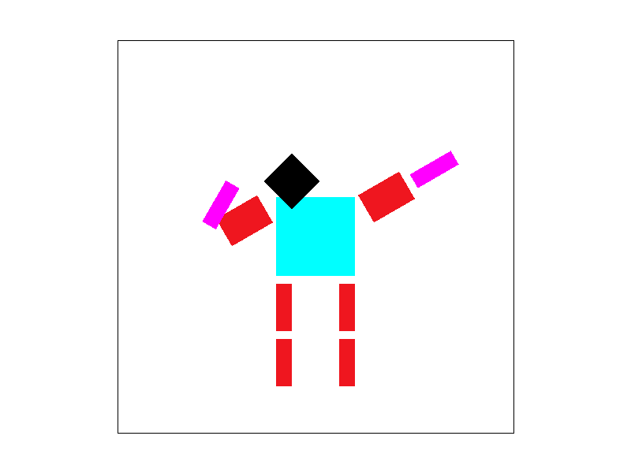

basic/test4.svg, rendered at 800x600. Aliasing
occurs at the narrow part of the triangle.
|
This project is essentially about building a rasterizing renderer for SVG images. It is designed for us to exercise the basic rasterization techniques we learned in the lecture, i.e. rasterization by sampling, antialiasing using supersampling, transformations, texture sampling and mipmaps.
Aside from just knowing the concepts, this project helped me understand the real-world constraints when putting the concepts into actual code: such as compute costs manifesting as framerate drops, how to minimize loop iterations by bounding by screen space, tradeoff between compute and memory requirements, etc. It was also interesting to see that there's no "magic" behind what's going on the screen to draw cool graphics: it is all well-founded math and signal processing in action.
Triangles are geometric shapes that consist of vertices whose position are defined as continuous real values. This is in contrast to computer screens which can only display informations that are discretized by their according pixel locations. Therefore, in order to convert from the continuous domain to the discrete domain, we use "sampling". By viewing the triangle as a function whose evaluated value is 1 if a given location inside the triangle and 0 if not, we can "discretize" this function by repeatedly evaluating the function with discrete values that are the pixel positions, of which process is called sampling.
In order to actually evaluate the function, we need an algorithm that determines if the given location is inside the triangle or not. For this, we use simple vector arithmetic that is given in the lecture, with the modification that checks if all three L0, L1 and L2 values are also smaller than 0, to accommodate the case when the edges are wound in the clockwise direction.
The algorithm in fact just uses the simple bounding box rasterization method.
In rasterize_triangle(),
I calculate the bounding box using variables sxmin,
symin, sxmax and sxmax. Then,
I run a double for-loop for (x, y) positions inside these ranges to check
all samples in the bounding box.
One optimization is that the code skips loop iterations for pixels that are
outside the screen space (two if (...) continue statements).
Therefore the algorithm might be slightly more efficient than actually
looping over every samples in the bounding box.
One interesting part of the image is where there is an aliasing effect around the narrow part of the magenta triangle. This is because the sampling frequency is too low compared to the narrow width of the geometry, therefore not meeting the Nyquist requirement. A way to fix this is to increase the sampling resolution, which is covered in Task 2 by supersampling.
basic/test4.svg, rendered at 800x600. Aliasing
occurs at the narrow part of the triangle.
|
My supersampling implementation works by expanding the size of the
sample_buffer vector by the sampling rate (e.g. for 4x4
sampling, expand by 16 times). rasterize_triangle simply
samples the geometry with the increased sampling rate and stores the result
onto sample_buffer. Finally, resolve_to_framebuffer
views into sample_buffer and does the averaging for all pixels,
and writes the averaged result to the framebuffer. Data structure-wise,
In terms of data structure, the only change is expanding the size of
sample_buffer, but the expanded vector takes on a specific memory layout.
The memory layout of sample_buffer places
all subpixels of a pixel adjacently, and then enumerating these subpixels by
the row-major pixel order. For example, for 2x2 supersampling, the memory
layout is:
[p00_0, p00_1, p00_2, p00_3, p10_0, p10_1, p10_2, p10_3, ...]
where pxy_n denotes the 3D-vector color value of the n-th
subpixel of a pixel that is located at (x,y) position in the screen space.
I choose to use this memory layout because it improves the locality of
the subpixels, which could lead to a more efficient memory access pattern
when accessing them to average down onto a framebuffer.
Code-wise, supersampling is implemented by nesting another double for-loop
inside the loop that iterates over the bounding box pixels in
rasterize_triangle(). The local variable gridsize is the value of
sqrt(sampling_rate), which can be used for indexing the
subpixels inside a pixel. For each of the subpixels,
we compute the (x,y) coordinate of the center of each subpixel, and use this
coordinate for running the point-in-triangle tests. resolve_to_framebuffer()
also has an added for loop that goes over the subpixels to accumulate their
color values and then normalize it to compute the average.
Supersampling is useful because it solves the aliasing problem caused by the sampling frequency of the screen being higher than the Nyquist frequency of the original geometry. This solution, called antialiasing, works by removing signal frequencies that are above the Nyquist limit of the original signal. A simple way to achieve this frequency culling is to convolve the original function with a blurring filter, which in turn can be achieved by sampling multiple positions in a single pixel, and then averaging them out to a single value. This "supersampling-then-averaging" process essentially has the effect of applying a low pass filter.
In the below screenshot, we can clearly see that as the supersampling rate increases, the aliasing effect occurred at the original image at the skinny corner gets more and more ameliorated. Aliasing is still there at 4 supersampling per pixel. This is because the cutoff frequency of the low-pass filter effect achieved at that supersampling rate was not low enough to effectively cut out all frequencies that are higher than the Nyquist frequency.
basic/test4.svg, supersampled 1 per pixel. |
basic/test4.svg, supersampled 4 per pixel. |
basic/test4.svg, supersampled 9 per pixel. |
basic/test4.svg, supersampled 16 per pixel. |
Below is my bad attempt at making the cubeman "dab". I also modified the
scale values to make his biceps more buff (but not his quads cause who's been
skipping leg days.) By putting multiple
g sections in the svg file under the same rotate tab,
I could compose the transforms more easily, e.g. rotate his whole arm rather
than just his forearm even with adding just one rotate line.

my_robot.svg render, "dabbing." |
|
Barycentric coordinates is essentially a way of doing interpolation inside
a triangle, by assuming that there is a linear approximation between the values
at the three vertices (A, B, C) and the value at arbitrary positions inside
the triangle, i.e. v = aA + bB + cC. The insight is that
we take the interpolation coefficients a, b, c to be constant regardless
of the kind of value we're trying to interpolate. Therefore, we can then
figure out a, b, c using the coordinates first, and then use
them to interpolate any other values such as pixel colors or
texture coordinates (u, v).
As an illustration, we can look at the image at the left below. While each
of the vertices have the RGB values of (1,0,0), (0,1,0) and (0,0,1), all the
interior pixels have continuously varying RGB values depending on their position.
This is because the a, b, c coefficients change continuously
by their coordinates, and therefore the colors as well, which are produced
using the same coefficients.
I saved the svg imaged used for rendering at docs/barycentric.svg.
In OpenGL terms, barycentric coordinates (when applied to vertex colors) could be an example of a simple fragment shader that linear interpolates the colors at the vertices.
docs/barycentric.svg).
|
For implementation, I made a helper function called
barycentric_interpolation in rasterizer.cpp. It
takes the coordinate of the three triangle vertices and one arbitrary
interior point, and computes the alpha, beta and gamma coefficients that
correspond to that point. The caller, rasterize_interpolated_color_triangle,
then can call into that function to get the interpolation coefficients,
and simply use them to interpolate the new color value using the three
vertex colors. The render of test7.svg is shown below.

basic/test7.svg. |
When mapping textures to a geometry, we face the same problem as e.g. coloring pixels inside the triangle: which value of the texture data do we have to use to color the pixel? However for textures, this problem is more compounded because the texture data that we have is also another discrete data to begin with.
Therefore, the central idea is to "re-sample" it: first, reconstruct a continuous function from the discrete texture data using e.g. linear interpolation, and second, sample this reconstructed function using a coordinate on the texture space (u,v) that corresponds to the coordinate on the screen space (x,y). This method is called pixel sampling for textures.
The implementation for pixel sampling is in two parts: (1) (u, v) coordinates computation, and the (2) actual reconstruction/sampling of the texture data.
The rasterize_textured_triangle() takes care of the (1) part:
by re-using the barycentric_interpolation() function from task 4,
it computes the (u,v) coordinate of any interior point inside a triangle
using the (u,v) coordinates of the three vertices.
Please note that despite there is a lot of code repetition, the code
for the three rasterize_xxx functions are left to be freestanding
without use of helper functions for better readability.
The part (2), reconstruction and sampling, is implemented in
sample_nearest() and sample_bilinear() functions
in texture.cpp. They are two different methods of reconstructing
continuous texture data from the original texture.
For sample_nearest(),
finding the nearest texel for a given uv-coordinate is simply a matter of
scaling them up by the texture's (width,height) value, and flooring them
to find the texel indices in the texture data.
For sample_bilinear(), implementation for reconstruction is more involved. We
first have to find the four nearest texels to a given uv-coordinate, but
since the [0,1) range is inconvenient to find actual texel positions, we first
scale them up by multiplying with the
texture's (width, height) value -- this is what the local variables tx
and ty are about. Then, we apply floor() and
ceil() to them, being careful about the fact that the center points
of the texels are located at half-points between integers, e.g. n.5.
Even after we find the four nearest texel positions (tx_floor
and tx_ceil), we have to handle the corner case of when the
tx and ty values fall into one of the four boundaries
of the texture data so that some of the positions of the four nearest texels
fall out-of-bounds. This is what the following chain of if-else conditions
do: they reset the floor and ceil values to be in valid ranges, so that
when we later access texels by passing those values as indices to the get_texel() function,
every indices are safely contained in range [0, width) and
[0, height).
Finally, using the "corrected"
tx_floor, tx_ceil, ty_floor and
ty_ceil values, we access the four texels using
get_texel() and store their
color values in local variables u00, u01, u10, u11. These
correspond to the values that are described in the lecture slides. Since
we also set the linerp coefficients s and t
accordingly to the boundary conditions in the aforementioned if-else statements,
we can safely use them to do the bilinear interpolation of the
u00, u01, u10, u11 values.
Below is the render of texmap/test5.svg. We can clearly see
that bilinear sampling improves on the legibility of the "BE" letters compared
to the nearest pixel sampling. We can see that even with nearest sampling,
when supersampling is bumped up to 16 samples, the quality is reasonably good.
However, it does not really help with the artifacts that show irregularities
along the boundary of the blue ring.
Bilinear will likely do better than nearest with supersampling especially in cases where the given texture data has very low resolution. This is because even with supersampling, if the texture data is low in resolution, the selected nearest texels for each of the supersamples might still be the same "big" texels, no matter how the supersamples are placed close to each other.
Another thing to consider is the memory requirement. While supersampling (at least in my implementation) requires the sampling buffer size that is linearly proportional to the sampling rate, bilinear texture sampling does not require substantially more memory allocation, because it only needs to access with the four neighboring pixels to do bilinear interpolation. There is more computation involved because of the increased number of interpolation computations, but considering the fact that memory access is in general much more costly that computation in modern computer hardware, and also the fact that modern GPU includess custom accelerator HWs for bilinear interpolation computation, bilinear texture sampling is a much more efficient scheme to achieve high texture fidelity than supersampling in general.
texmap/test6.svg, nearest, 1 spp. |
texmap/test6.svg, nearest, 16 spp. |
texmap/test6.svg, bilinear, 1 spp. |
texmap/test6.svg, bilinear, 16 spp. |
Level sampling tries to accommodate the fact that when the texture is minified above certain degree, a single pixel in the screen space can have a vast amount footprint in the texture space which could be costly in memory. Therefore, by providing mipmaps that are produced by applying low-pass filter on the high-res texture image and downsampling it, we can apply different texture images at different minification level so that we avoid having to access an excessive amount of texture memory.
The actual arithmetic that computes the mipmap level is in get_level().
It follows the basic algorithm described in the spec: it first computes the
difference vectors with varying x and y (local variables diff_dx_uv),
and scales them up by the texture size so that we are dividing with the same length units.
Then, we use the C++ functions std::max and std::log2
to compute L and D as covered in the lecture.
Once we have the mipmap levels, we are ready to do level sampling. For
There are two methods of level sampling covered in class: nearest and linear
sampling. Counting doing no level sampling at all, we have three cases.
All of these methods are implemented in the Texture::sample()
function, where a chain of if-else statement looks at the sp.lsm
value to determine the method.
The L_NEAREST is straightforward: we just round the value
returned from get_level() to find the nearest level, and we
pass it to one of the sample_xxx functions according to the
sp.psm variable.
For L_LINEAR, we have to now sample at most two levels that
are nearest to the float value of the get_level() return value.
We call the sample_xxx functions with the two level integers,
and do linear interpolation between them. A boundary case is when the float
level value is exactly an integer value; in this case, we skip doing
the sampling twice and linerp altogether by having a separte if-else case
that returns early.
We already did a similar discussion on tradeoff between speed and memory in part 5. To reiterate, while supersampling delivers good quality in terms of removing more "general" jaggies that might occur in other things than texture mapping, pixel sampling is more efficient in terms of memory. This is because (at least in my implementation) supersampling requires the sampling buffer size that is linearly proportional to the sampling rate, while pixel sampling does not require substantially more memory allocation by only looking at a bounded number of neighboring pixels.
Likewise, for level sampling, the computational cost does increase because of the higher number of linear interpolation computations involved; but supersampling pays great memory cost by having to enlarge the sampling buffer accordingly. Again, considering the fact that memory access is in general much more costly than computation in modern computer hardware (the "memory wall"), this might have implications. Also, the fact that all modern GPU includes custom accelerator HWs for bilinear/trilinear interpolation computation makes texture sampling a more efficient scheme than supersampling in general.
However, pixel sampling and level sampling has clear limitation in that they are only applicable to increasing the fidelity of the texture mapping, and doesn't do anything in doing antialiasing in the geometry edges (removing the "jaggies"). Therefore, one can say that supersampling has better "general" antialiasing power in the sense that it can remove jaggies in both the geometry data and the texture data.
In the top level image, there is some aliasing effect on the letter "a" with the curve being cut off in the middle. All the other three combinations show an improved antialiased image.
The bottom two images really show that L_NEAREST is working. In those images, we can see that the letter "nd" part in "hand" is seeing more "smooth" antialiased effects, whereas "ha" still has some aliasing. This is because the "nd" part got selected a deeper mipmap level than the "ha" part, which indicates that different mips are indeed being used for the different parts of the image.
|
|
|
|
|
|
Here is another illustration. This is the visualization of the different mipmap levels taken in each pixels by setting the R and B value of the pixel as the mipmap level normalized by the maximum mipmap level. We can clearly see that the more "stretched", and thus more magnified part of the image is being selected a lower mipmap level, which matches our intuition.
|
|
If you are not participating in the optional art competition, don't worry about this section!
Here is an example 2x2 gridlike structure using an HTML table. Each tr is a row and each td is a column in that row. You might find this useful for framing and showing your result images in an organized fashion.

|

|

|

|